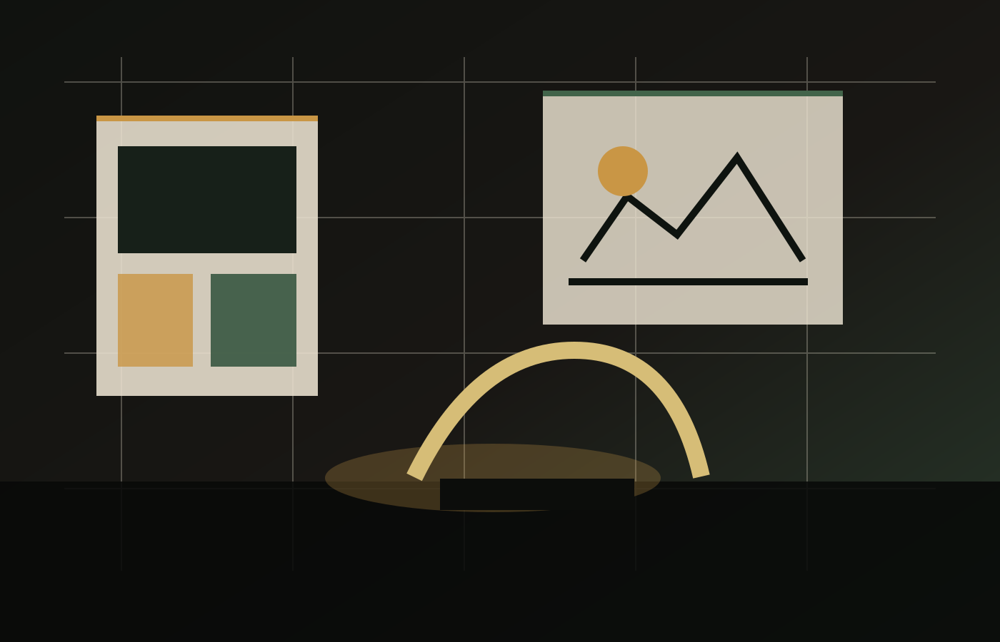

Experience strategy and narrative design
Interpreting institutional goals into visitor journeys, themes, and concept worlds.
Studio story
Chromosome Designs brings together exhibition design, model making, environmental graphics, filmmaking, interactive software, AR/VR, and on-site execution for government and institutional cultural projects.

Mission and philosophy
We believe visitors learn through sequence: arrival, orientation, surprise, touch, pause, and recall. Every project is treated as a system of spatial storytelling, not a collection of isolated display objects.
That is why the studio moves from research and script to physical form, interaction, fabrication, installation, and public handover as one connected practice.
Team
Interpreting institutional goals into visitor journeys, themes, and concept worlds.
Translating concepts into scale, materials, lighting, drawings, and production logic.
Building layered interpretation that responds to audiences, language, and context.
Expertise visualization
Milestones
Early work in exhibition graphics, models, and educational environments.
Expanded into interpretation centers, science installations, and government projects.
Added kiosk software, projection, and augmented learning to physical exhibit systems.
400+ delivered projects across museums, parks, civic spaces, and public education.
Every cinematic moment must help the visitor understand the subject.
Material, language, graphics, and visitor flow respond to the site and its public.
Design decisions are tied to fabrication, maintenance, access, and institutional use.